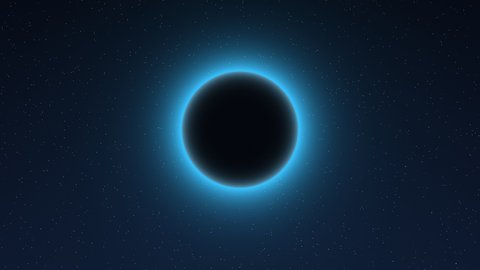
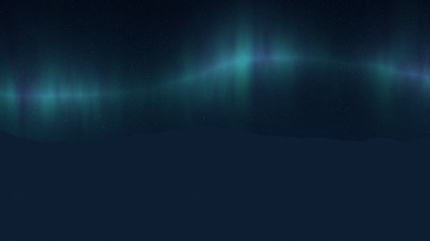
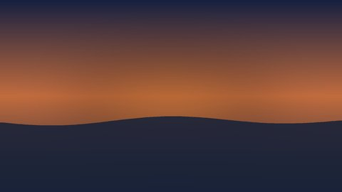

32 Free Wallpapers + Smooth Auto-Rotate
Click any preview below to test it live in the Mini-VM above (or run wallpaper 1..8 in the VM terminal). Lunar DE includes 32 bundled 1080p wallpapers plus a 33rd Cycle All (15s) option with smoothstep cross-fading.

01 · Lunar Eclipse
02 · Nordic Aurora03 · Ocean Horizon
 04 · Cyber Synthwave
04 · Cyber Synthwave 05 · Cosmic Nebula
05 · Cosmic Nebula06 · Midnight Fjord

07 · Golden Hour Bay 08 · Cobalt Velocity
08 · Cobalt Velocity